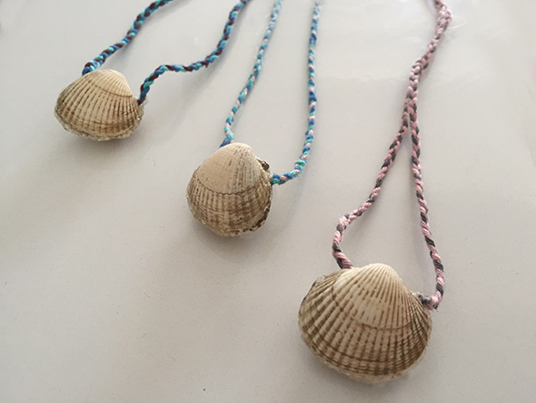

Säubere eine Muschel die beide Hälften hat. Schreibe deinen Sommerwunsch auf einen Zettel und falte ihn so oft, bis er in die Muschel passt.
Als Kette kannst du ein paar Fäden flechten, diese legst du in die Muschel und klebst die beiden Hälften mit der Klebepistole zusammen! Meerjungfrauen wünsche.